AI CONSULTING SIGNAL INDEX · 第 20 期
17 家传统咨询 / 专业服务公司的 AI 动作,20 周跟踪,277 条带原始来源的公开证据。
不问谁名气大,只看谁正在把 AI 变成合作、平台、并购、交付与客户价值。
WHY · 为什么做
MBB、四大、埃森哲、精品战略公司都在喊 AI,但谁在真投入、谁在真交付,公开信息散落在几十个渠道里。
品牌声誉不等于 AI 能力。没有统一维度,比较就只能停留在案例故事和销售话术。
客户价值证明最稀缺:有量化结果、可核验的案例,比任何叙事都难找。
看主榜与公司追踪页:17 家公司每家一页,完整事件时间线,全部带原始来源链接。
用九个统一维度做横向比较,而不是比品牌故事;每一维都有 0–5 分锚点定义。
客户价值证明单独成维:有量化结果、可核验的案例才计分,叙事不计分。
HOW · 怎么做
九维权重合计 100%。每维 0–5 分人工评估,加权合成为 0–100 分;主榜显示口径为相对行动力指数(当期榜首 = 100)。
FINDING · 关键发现
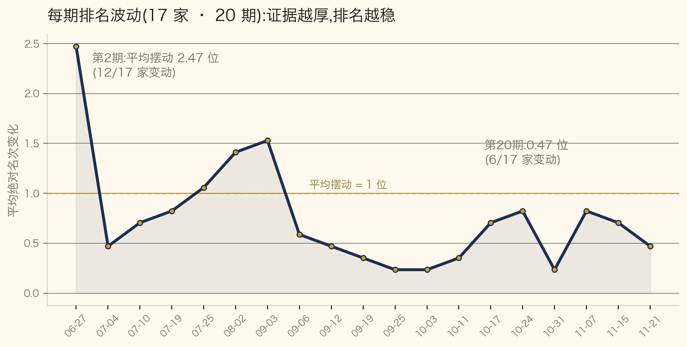
早期榜单证据薄,一条大新闻就能 reshuffle;20 周、277 条证据之后,排名只随有意义的证据移动——一个每周都在洗牌的榜单没法用于决策,而收敛之后的榜单开始可以。
BOARD · 本期榜单
| 排名 | 公司 | 指数 | 较上期 | 最新最强信号 |
|---|---|---|---|---|
| 1 | 波士顿咨询BCG | 100.0 | — | 11-18 · BCG 与 Microsoft 扩展合作：以 Front |
| 2 | 德勤Deloitte | 95.7 | ▲1 | 11-12 · Deloitte 收购 Flipside Crypto |
| 3 | 麦肯锡McKinsey | 92.9 | ▼1 | 11-10 · McKinsey 发布《Global Banking A |
| 4 | 埃森哲Accenture | 91.1 | — | 09-18 · Anthropic 任命 Accenture 为首个前沿 |
| 5 | 普华永道PwC | 85.1 | — | 10-05 · PwC 与 Cohere 宣布全球联盟，加速安全可信的企 |
| 6 | 贝恩Bain | 83.0 | — | 09-29 · Bain 发布第 7 届全球技术报告：AI 需在 203 |
| 7 | 安永EY | 78.4 | ▲2 | 11-18 · EY 发布 EY Agentic Cyber Defen |
| 8 | 毕马威KPMG | 77.5 | — | 11-17 · KPMG Clara intelligence（KCi） |
| 9 | 艾意凯L.E.K. Consulting | 75.9 | ▼2 | 10-23 · L.E.K. 发布《Warehouse Automati |
| 10 | 凯捷Capgemini | 70.1 | ▲1 | 10-30 · Capgemini Q3 营收 €60.7 亿（+12. |
沉默公司:Strategy&、Monitor Deloitte(本窗零新增)。指数为研究预览口径,不代表权威排名。
MBB
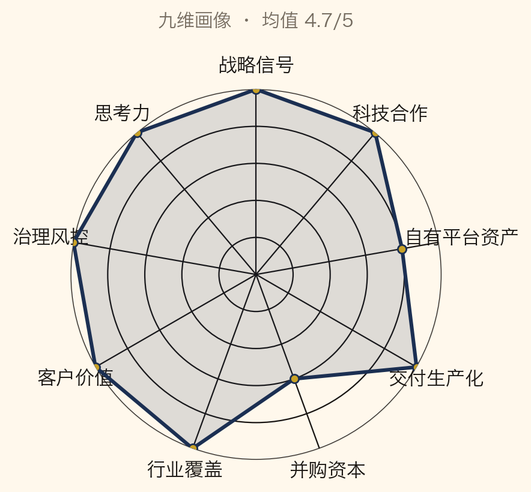
人工九维分(2026-08 研究口径)· 0–5 分
Big Four
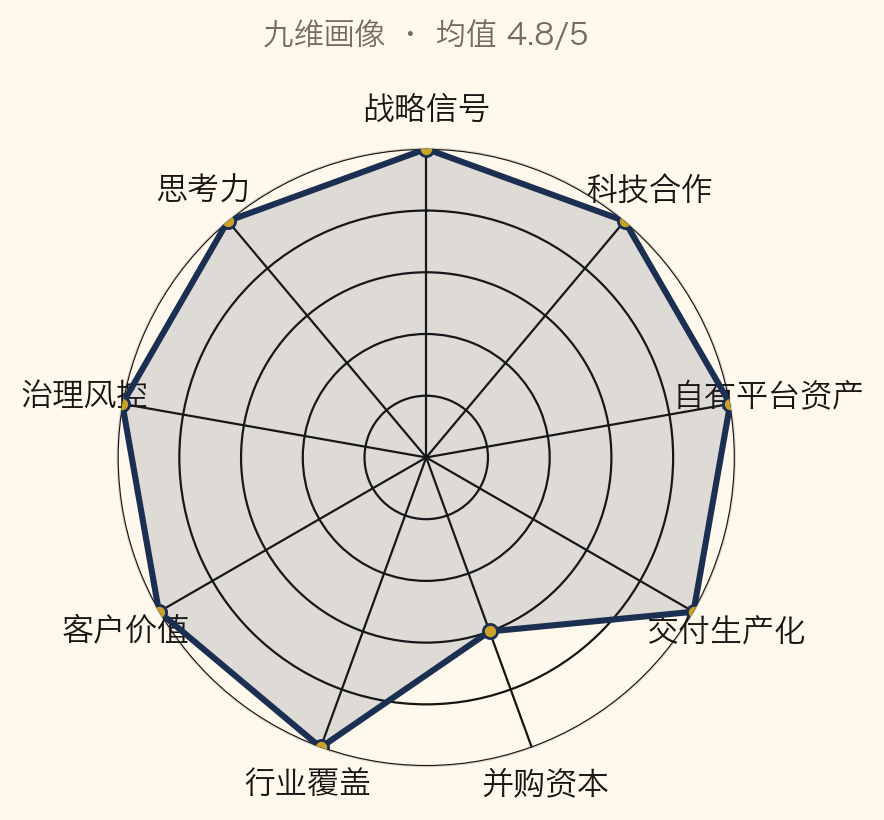
人工九维分(2026-08 研究口径)· 0–5 分
MBB
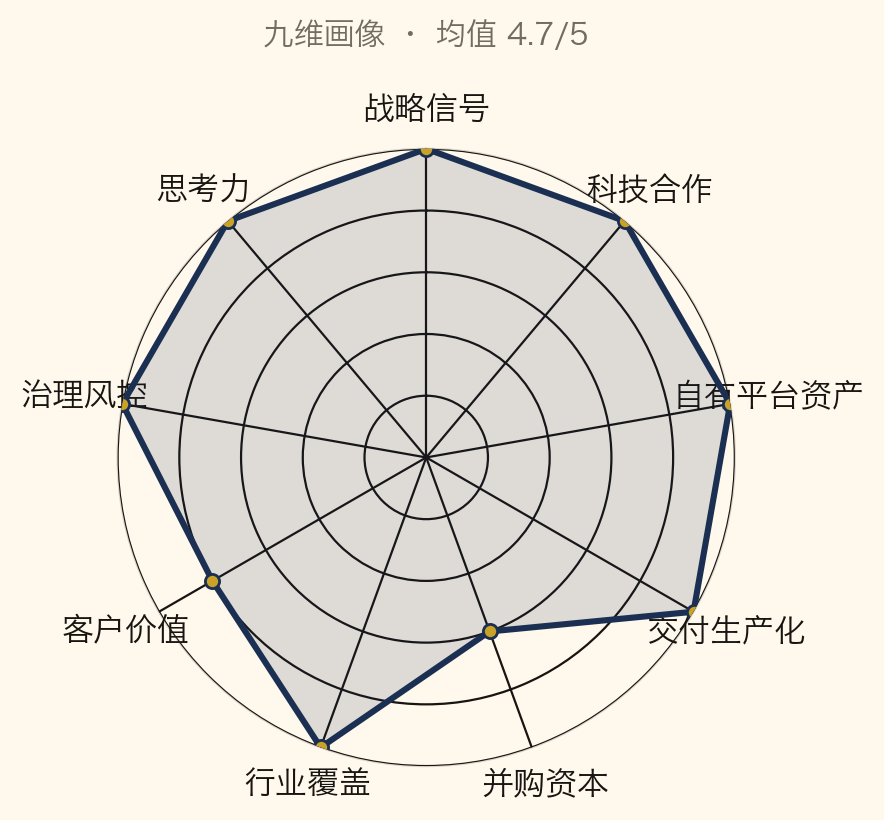
人工九维分(2026-08 研究口径)· 0–5 分
Technology Consulting / SI
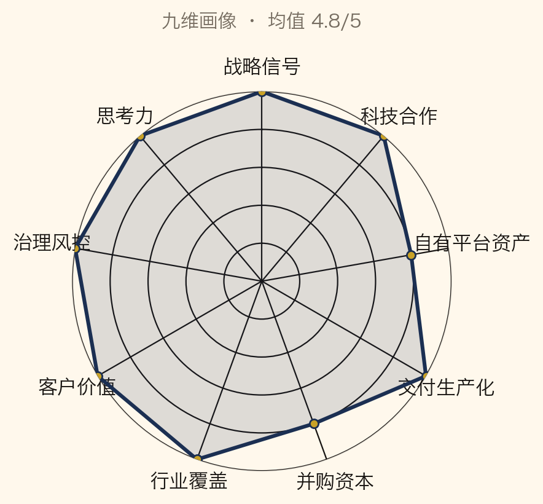
人工九维分(2026-08 研究口径)· 0–5 分
Big Four
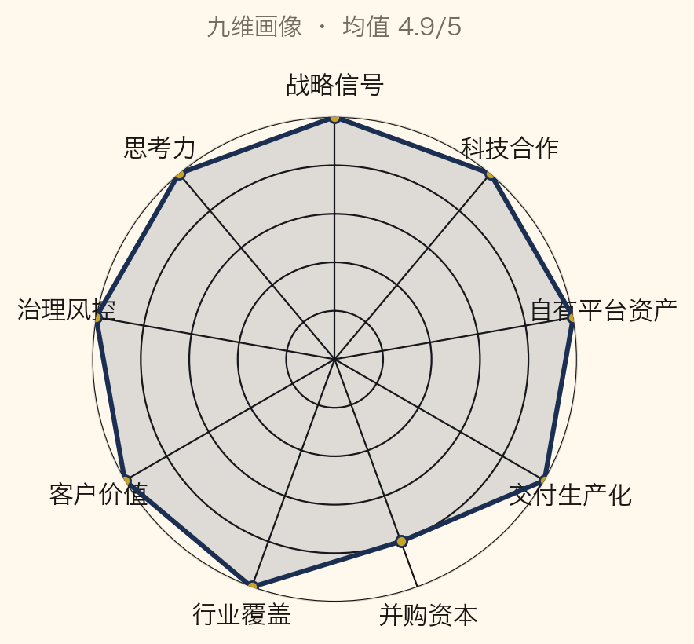
人工九维分(2026-08 研究口径)· 0–5 分
MBB
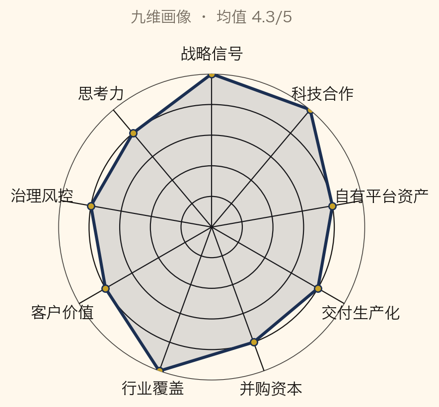
人工九维分(2026-08 研究口径)· 0–5 分
Big Four
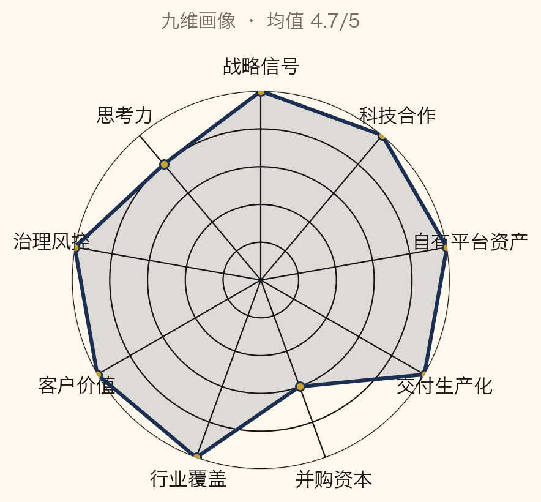
人工九维分(2026-08 研究口径)· 0–5 分
Big Four
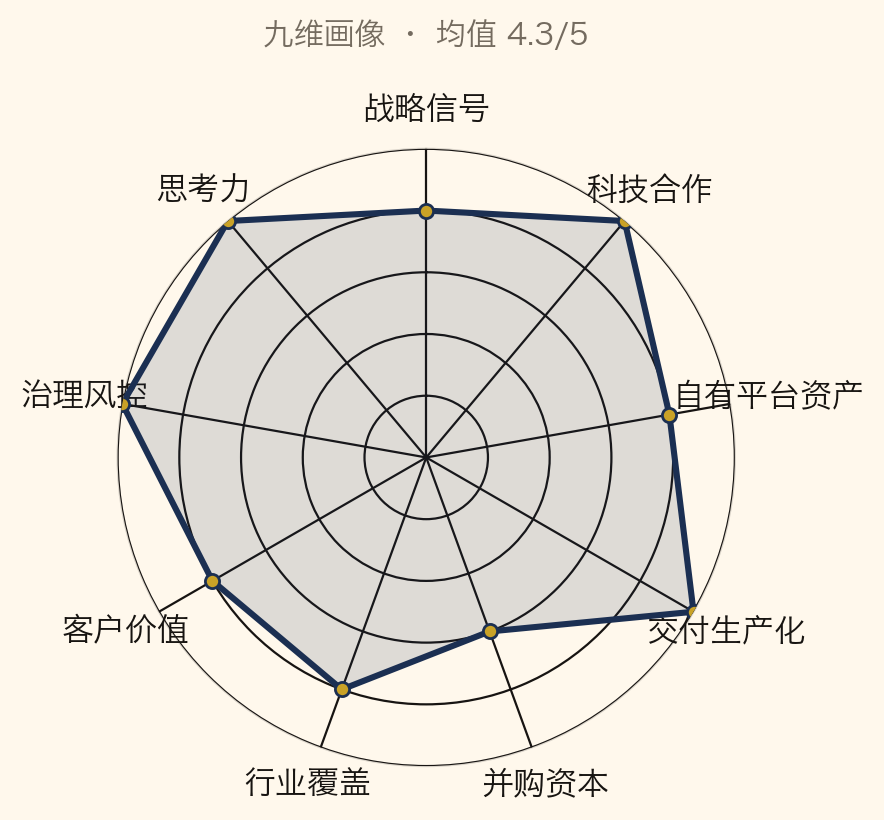
人工九维分(2026-08 研究口径)· 0–5 分
Strategy Consulting
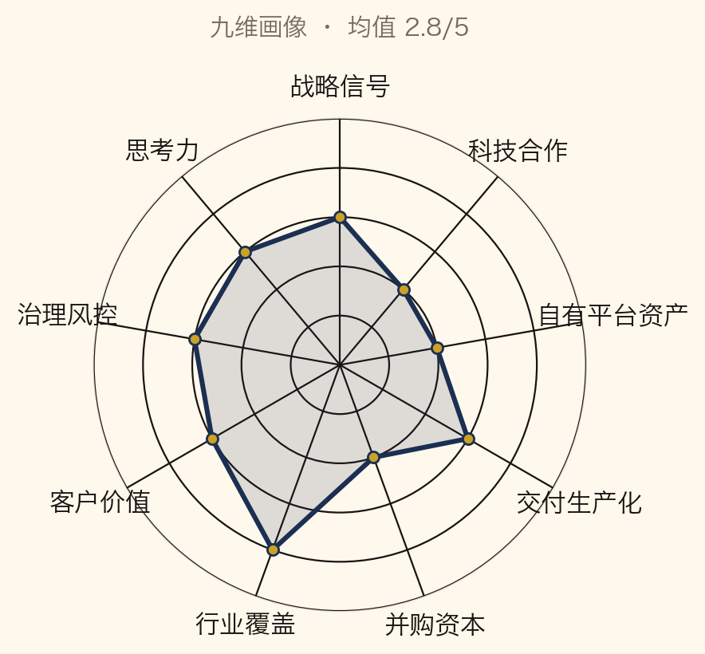
人工九维分(2026-08 研究口径)· 0–5 分
Technology Consulting / SI
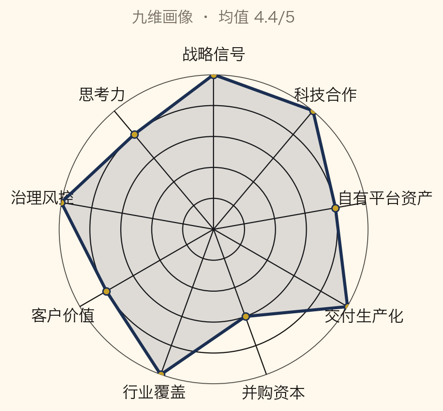
人工九维分(2026-08 研究口径)· 0–5 分
CAVEATS · 口径与使用
① 这是研究预览,不是权威排名:指数衡量最近公开动作的强弱,不是综合能力或客户口碑。
② 榜单只看公开可核验的动作:沉默 ≠ 没做事,只是本周没有新增可验证信号。
③ 负向信号不计分:争议与事故留给市场定价,榜单只衡量正向行动力。
主榜:每周更新,谁升谁降、最强信号、沉默名单——30 秒读完。
公司追踪页:17 家公司每家一页,完整事件时间线+全部来源链接,适合尽调前的快查。
AI 行动力自评:用同款九维模型给你的公司打分,与 17 家样本的中位线逐维对比,并给出最弱两维的补证据清单。
榜单变化,每周一封:consultingrank.netlify.app · Praxis Advisory